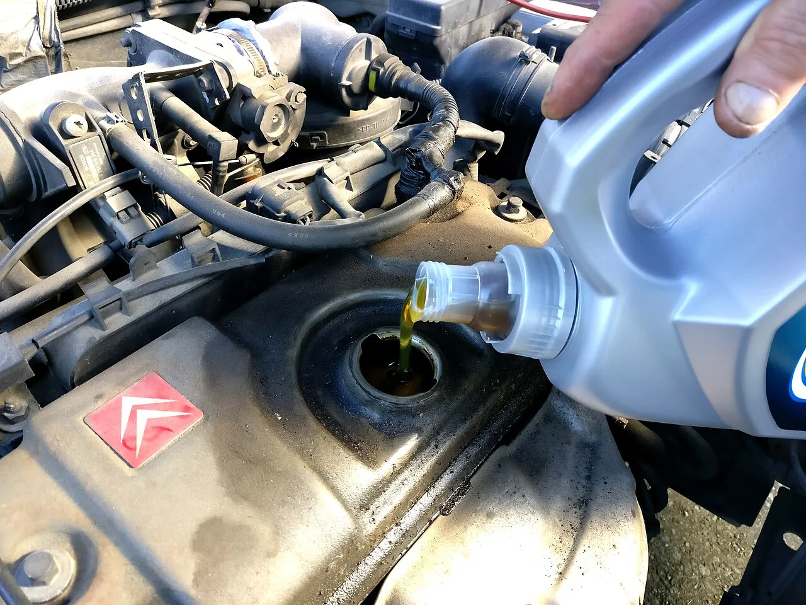
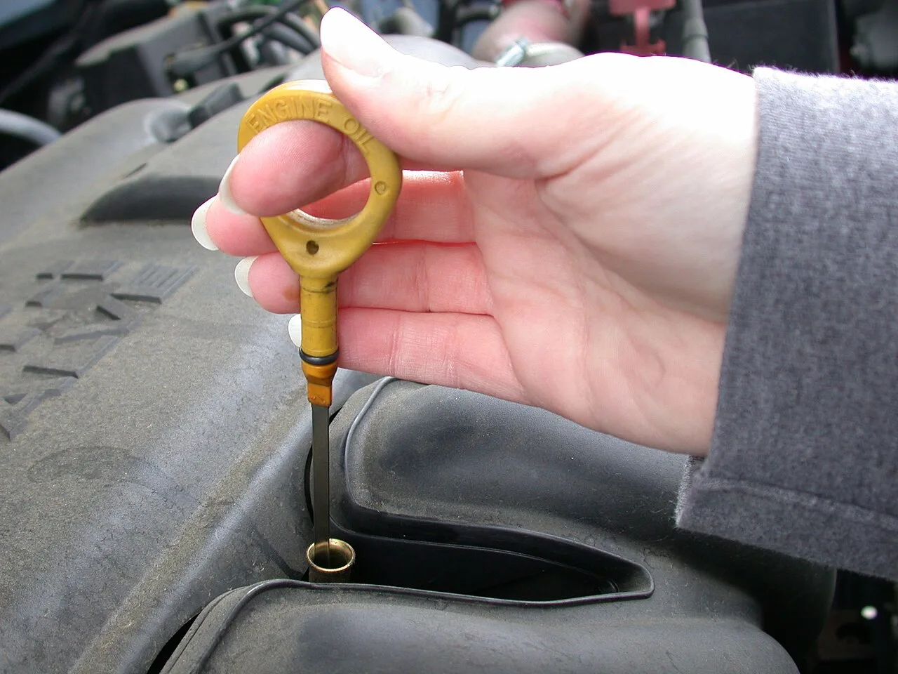
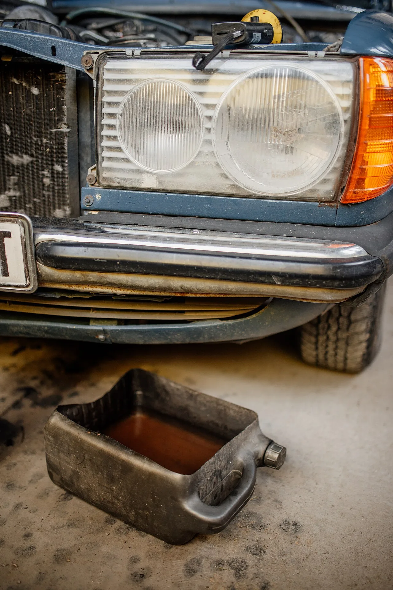
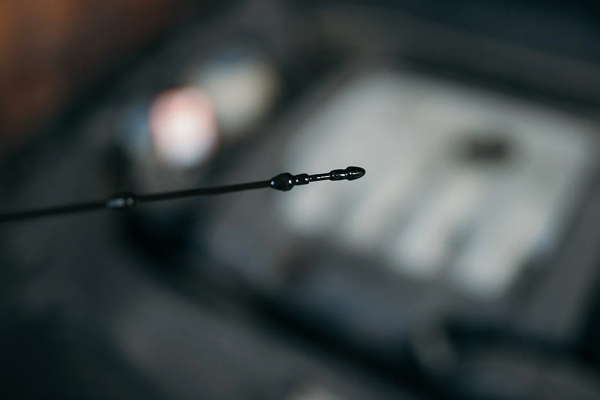

▲ 합성유·광유·반합성유는 겉보기엔 비슷해도 기유 정제 방식이 다르다 ⓒ Wikimedia Commons
"이건 100% 합성유라 15,000km는 거뜬합니다." 정비소나 오일 판매점에서 흔히 듣는 말이다. 그런데 정작 캔에 적힌 "합성유"라는 표기가 브랜드마다 다른 기유(base oil)를 가리킬 수 있다는 사실은 잘 알려지지 않았다.
광유·반합성유·합성유는 가격만 다른 게 아니라 정제 방식, 점도지수, 열 안정성이 근본적으로 다르다. 광고 문구에 낚이지 않으려면 무엇이 다른지, 그리고 내 차에는 무엇이 맞는지부터 알아야 한다.
1. 광유·합성유를 가르는 기준 — 기유(Base Oil) 그룹
엔진오일은 기유(70~90%)에 첨가제를 섞어 만든다. 이 기유를 어떻게 정제·합성했는지에 따라 미국석유협회(API)는 그룹 I부터 V까지 다섯 단계로 분류한다.
| 그룹 | 제조 방식 | 성격 |
|---|---|---|
| Group I | 원유를 용제로 정제(단순 정제) | 가장 저렴한 광유, 점도지수 낮음 |
| Group II | 수소첨가 정제(hydrotreating) | 불순물이 적은 광유, 산화 안정성 개선 |
| Group III | 고압 수소첨가분해(hydrocracking)로 점도지수 120 이상까지 끌어올린 가혹 정제 광유 | 원료는 원유지만 물성은 합성유에 근접 — "합성유"로 판매되는 핵심 원료 |
| Group IV | 화학적으로 합성한 PAO(폴리알파올레핀) | 진짜 화학합성유, 저온·고온 성능 우수 |
| Group V | 에스터 등 나머지 합성 기유 | 주로 첨가제·고급 오일에 소량 배합 |
📍 점도지수(VI)란
온도 변화에 따라 오일의 점도가 얼마나 적게 변하는지를 나타내는 지표다. 점도지수가 높을수록 겨울철 시동 시 뻑뻑해지거나 여름철 고온에서 묽어지는 정도가 적어, 냉간 시동 마모와 고온 유막 파괴를 동시에 줄여준다. Group III 이상부터 점도지수 120을 넘어서며 '합성유급' 성능을 낸다.
2. 광유·반합성유·합성유 — 실제 차이와 가격·교체주기
시중에서 파는 엔진오일은 대부분 이 기유들을 섞어서 만든다. 완전히 순수한 그룹 하나만 쓰는 경우는 오히려 드물고, 배합 비율에 따라 광유·반합성유·합성유로 나뉜다.
| 구분 | 주요 기유 | 가격대(4L 기준) | 일반 교체주기 |
|---|---|---|---|
| 광유(Mineral) | Group I~II | 가장 저렴 | 약 5,000km 또는 3~6개월 |
| 반합성유(Semi-Synthetic) | Group I~III 혼합(합성유 기유 20~30% 내외) | 중간 | 약 7,500~10,000km |
| 합성유(Full Synthetic) | Group III·IV 위주 | 가장 비쌈 | 약 10,000~15,000km |

▲ 교체주기는 주행거리뿐 아니라 오일 상태를 딕스틱으로 직접 확인하며 조정하는 것이 정확하다 ⓒ Wikimedia Commons
다만 이 수치는 일반적인 가이드라인일 뿐, 최종 기준은 항상 차량 취급설명서다. 터보 엔진, 고성능 엔진, 혹은 정체가 잦은 가혹 조건 주행이라면 제조사가 별도의 단축 주기를 권장하는 경우가 많다.
3. "100% 합성유"의 진짜 의미 — 그룹 III 논쟁
"100% 화학합성유"라는 표현을 보면 대부분 Group IV(PAO) 기유만 썼을 거라 생각하기 쉽다. 하지만 실제로는 그렇지 않은 경우가 많다.
📍 미국 광고자율규제기구(NAD) 판정이 만든 '합성유'의 기준
1990년대 후반 캐스트롤(Castrol)이 자사 "Syntec" 오일의 기유를 PAO(Group IV)에서 하이드로아이소머화 광유(Group III)로 바꾸면서도 "100% 합성유(Full Synthetic)" 표기를 유지하자, 경쟁사 모빌(Mobil)이 이를 허위광고라며 문제를 제기했다. 이 사건은 법원 소송이 아니라 미국경영개선협회(BBB) 산하 광고자율규제기구인 NAD(National Advertising Division)의 심의로 진행됐고, NAD는 1999년 3월 Group III 기유도 '합성유'로 광고할 수 있다고 판정했다. 이 판정은 법적 구속력이 없는 자율규제 결정이지만, 이후 사실상 업계 관행으로 굳어지면서 현재 시중의 "100% 합성유" 제품 상당수는 Group III 기유 위주로 만들어진다.
✅ 그렇다면 무엇이 진짜 '고급' 합성유인가
· Group III 기반 합성유 — 가격 대비 성능이 좋은 주류 제품군, 대부분의 일반 승용차에 충분
· Group IV(PAO) 함량이 높은 합성유 — 저온 유동성·열 안정성이 한 단계 더 우수, 고성능·터보 엔진이나 혹한 지역에 유리
· Group V(에스터) 배합 제품 — 주로 소량 첨가돼 세정성·극압 성능 보강에 쓰임
· 제품명의 "100% 합성"만으로는 어느 그룹 위주인지 알 수 없으므로, 성분표나 제조사 기술자료(TDS)를 확인하는 것이 정확하다
기유별 화학적 차이와 PAO(Group IV)에 대한 자세한 설명은 아래에서 확인할 수 있다. PAO 기유 심층 분석 바로가기

▲ 오일 종류와 관계없이, 다 쓴 오일은 이렇게 짙은 색으로 변한다 — 색만으로 오일 등급을 판단할 수는 없다 ⓒ Wikimedia Commons
4. 신차·노후차, 어떤 오일이 맞을까 — API·ACEA 규격 확인법
오일 종류보다 먼저 확인해야 할 것은 내 차에 맞는 '규격'이다. 같은 5W-30이라도 제조사가 요구하는 API·ACEA 등급을 충족하지 못하면 촉매 손상, 슬러지 발생 등 문제가 생길 수 있다.
| 규격 | 제정 기관 | 표기 예 | 의미 |
|---|---|---|---|
| API | 미국석유협회 | SP, SN Plus 등 | 가솔린(S)·디젤(C) 엔진용, 알파벳이 뒤로 갈수록 최신 규격 |
| ACEA | 유럽자동차공업협회 | A5/B5, C3 등 | A는 가솔린, B는 디젤, C는 후처리장치(DPF·촉매) 보호용 저회분 오일 |
| SAE 점도 | 미국자동차공학회 | 5W-30, 0W-20 등 | 앞 숫자는 저온 유동성, 뒤 숫자는 고온 점도 |
✅ 신차/노후차별 선택 팁
· 신차·저마일리지 차량 — 제조사 정품 규격의 합성유(또는 반합성유)로 시작, 취급설명서 점도(예: 0W-20)를 그대로 따를 것
· 주행거리 10만km 이상 노후 차량 — 엔진 내부 마모로 오일 소모가 늘 수 있어, 점도가 살짝 높은 제품이나 고마일리지 전용(High Mileage) 오일을 고려
· 가솔린 직분사(GDI) 엔진 — 카본 슬러지 억제 성능을 강조한 최신 API 규격(SP 이상) 확인
· 디젤 미립자필터(DPF) 장착 차량 — 반드시 ACEA C등급 등 저회분(Low SAPS) 오일 사용, 일반 오일 사용 시 DPF 막힘 위험
· 최종 판단 기준은 언제나 엔진룸 오일 캡 각인 또는 취급설명서의 지정 규격·점도

▲ 오일 색이 짙게 변했다면 규격과 별개로 교체 시기를 앞당겨야 할 신호일 수 있다 ⓒ Wikimedia Commons
5. 오일만 갈고 필터는 재사용해도 될까
결론부터 말하면 권장되지 않는다. 오일필터는 엔진 내부를 순환하는 오일 속 금속가루·먼지·슬러지를 걸러내는 부품으로, 사용 기간이 길어질수록 여과 성능이 떨어지고 필터 자체가 오염원이 된다.
📍 새 오일도 헌 필터를 거치면 금방 오염된다
아무리 고급 합성유로 교체해도, 기존에 쓰던 오일필터를 그대로 두면 필터에 남아있던 오염물질이 새 오일에 다시 섞여 들어간다. 필터의 여과지가 막히기 시작하면 바이패스 밸브가 열려 걸러지지 않은 오일이 그대로 엔진을 순환하게 되는 구조이기 때문에, 오일 교체와 필터 교체는 사실상 한 세트로 봐야 한다.
✅ 오일필터 교체 원칙
· 오일 교체 시 매번 함께 교체하는 것이 정비업계의 일반적인 권장 사항
· 일부 제조사는 오일 2회 교체당 필터 1회 교체를 허용하기도 하나, 국내 통상 주기(짧은 편)에서는 매번 교체가 관행
· 에어필터·캐빈필터는 별도 주기(통상 15,000~20,000km)로 관리하되, 오일필터와는 교체 주기를 혼동하지 않을 것
6. 요약
광유·반합성유·합성유의 차이는 결국 기유(base oil)의 정제·합성 수준 차이다. Group I~II는 광유, Group III는 가혹 정제를 거친 '합성유급' 광유, Group IV(PAO)는 진짜 화학합성유다. 시중의 "100% 합성유" 제품 상당수는 Group III 위주로 만들어지며, 이는 1999년 미국 광고자율규제기구(NAD) 판정 이후 굳어진 업계 관행이다.
교체주기는 광유 약 5,000km, 반합성유 약 7,500~10,000km, 합성유 약 10,000~15,000km가 일반적인 가이드라인이지만, 가혹 조건 주행이라면 앞당겨야 한다. 오일 종류를 고르기 전에 차량 취급설명서의 API·ACEA 규격과 SAE 점도 지정부터 확인하는 것이 우선이다.
어떤 오일을 쓰든 오일필터는 매번 함께 교체하는 것이 원칙이다. 새 오일의 성능은 깨끗한 필터를 거칠 때에만 온전히 발휘된다.